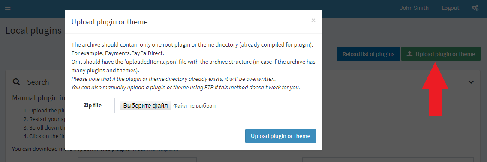
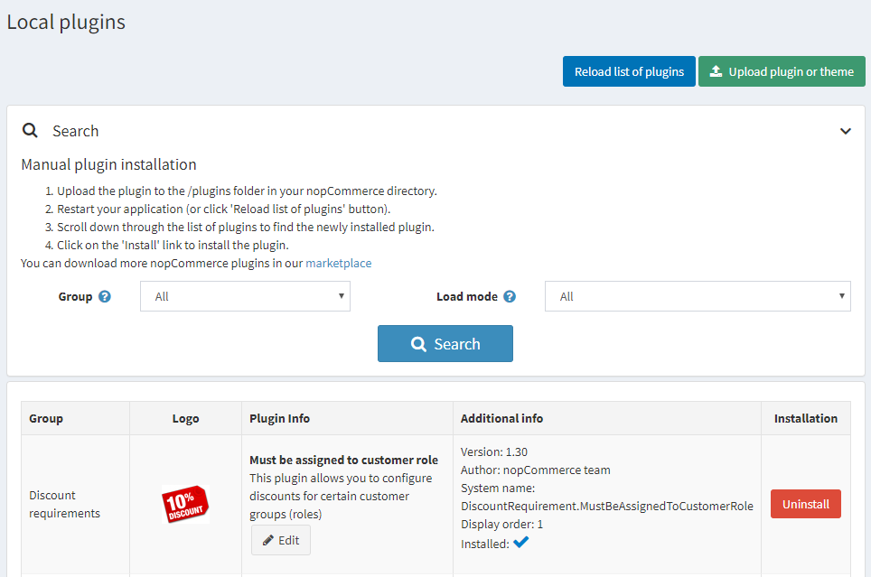
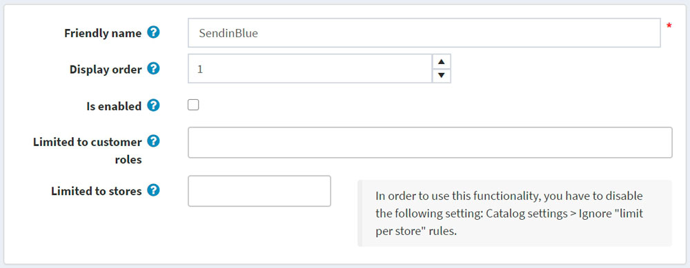

nopCommerce 中的外掛
外掛是一組為 nopCommerce 商店增加特定功能的元件。外掛的範例包括付款模組、運費計算方式等。本章節說明如何手動安裝外掛。
nopCommerce 市集 提供了多種擴充您商店功能的外掛。您可以透過從市集下載，或直接從管理後台存取前台網站來安裝外掛。
市集上的外掛可以依照類別、版本、名稱或評分進行排序，且分為免費或付費。
市集上提供的外掛是由 nopCommerce 團隊、解決方案合作夥伴或第三方供應商所開發。
Note
標示為「By nopCommerce team」的外掛是由 nopCommerce 團隊開發並免費發布。第三方服務連接器是在 技術合作夥伴計畫 下開發的；它們同樣適用於 nopCommerce 進階支援服務，且亦為免費發布。
安裝外掛
使用者有兩種上傳外掛的方式，您可以選擇任何一種方便的方式：
- 將外掛上傳到 nopCommerce 目錄中的
/plugins資料夾，並重新啟動您的應用程式（或點擊 重新載入外掛清單 按鈕）。 - 使用 上傳外掛或佈景主題 按鈕，並指定本機儲存空間中外掛封存檔的路徑。
Tip
您可以在我們的 擴充功能目錄 中下載更多 nopCommerce 外掛。

- 將外掛上傳到 nopCommerce 目錄中的
捲動瀏覽外掛清單以找到剛安裝的外掛。
點擊 安裝 連結來安裝外掛。
點擊上方面板的 重新啟動應用程式以套用變更 按鈕，完成安裝程序。
外掛將會顯示在外掛清單中（設定 → 本地外掛）。
Note
如果您在 medium trust 環境下執行 nopCommerce，建議清除您的
\Plugins\bin\目錄。
設定外掛
- 前往 設定 → 本地外掛。外掛清單將會顯示：

- 點擊外掛旁邊的 設定 連結，以前往該外掛的設定頁面。如果外掛旁邊沒有 設定 按鈕，則表示該外掛無需進行設定。
變更外掛的友善名稱、顯示順序與限制
- 前往 設定 → 本地外掛。外掛清單將會顯示：
- 點擊外掛旁邊的 編輯 按鈕。依照下列說明編輯外掛詳情：

- 輸入 友善名稱。
- 在 顯示順序 欄位中，定義顯示該外掛的所需位置。1 代表清單的最上方。
- 如果您想要在商店中啟用該外掛，請選取 已啟用 欄位。
- 從 限制顧客角色 下拉式選單中，選擇您希望能夠使用此外掛的角色。
- 在 限制商店 欄位中，定義該外掛將被使用的商店。
- 點擊頁面上方的 儲存。
解除安裝外掛
- 前往 設定 → 本地外掛。外掛清單將會顯示：
- 點擊外掛旁邊的 解除安裝 連結進行解除安裝。外掛將會被移除。安裝欄 中的連結將變更為 安裝，讓您隨時可以重新安裝該外掛。
- 點擊上方面板的 重新啟動應用程式以套用變更 按鈕，完成解除安裝程序。